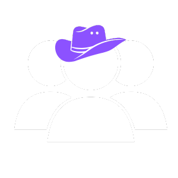

Quinho Guedez
Bem-vindo ao meu blog pessoal, quinhoguedez.com. Aqui você verá toda a minha jornada em busca
pela liberdade.
Aqui compartilho momentos da minha vida, pensamentos, aprendizados e histórias do meu dia a dia.
Divulgue minha empresa

Problemas com o algoritmo
26-05-2025
Como vocês já sabem, eu já estou divulgando o meu diário, mas hoje me
deparei com grande problema, os meus vídeos estão "flopando".
Eu já sabia que não seria fácil monetizar esse blog, mas também não imaginava que meus vídeos
iriam ter tão poucas visualizações, querendo ou não é importante subir esse número, e desanima
bastante saber que meus conteúdo não estão engajando bem. Eu presiso saber como aumentar as
visualizações, se não o meu plano não vai dar certo.
Eu tenho o interesse em subir anúncios com tráfego pago, já falei isso aqui antes, mas não
posso subir anúncio sem aprender a produzir conteúdos que as pessoas gostam de ver, no momento
eu quero ter uma noção do tipo de vídeo que mais se encaixa com o meu perfil, para aí sim começar
a subir anúncio na internet.
Tenho que descobrir o meu formato adequado, e construir um público fiel, que acompanhe os vídeos
assim que postados, claro que isso não é do dia pra noite, mas já estou ficando sem tempo.
Eu listei alguns dos conteúdos que eu mais achei que iriam combinar com o meu perfil. O primeiro
deles é os vídeos de treino, até por que eu gosto de treinar, como não tenho autoridade
suficiente nesse assunto pra dar dicas, posso postar uns vídeos na academia. O segundo era
vídeos motivacionais, se tem uma coisa que eu sou bom é motivar os outros, sempre da certo
quando uso a minha energia para motivar alguém na academia, ou em qualquer lugar que eu esteja.
O último deles era postar sobre meu dia, oque faria muito mais sentido já que estou divulgando
o meu próprio diário, então falar do meu próprio dia seria bem interessante, mas oque falar
do meu dia? Posso comentar sobre algo que aconteceu, ou que estou fazendo, não tenho muitas
ideias para isso, por que meus dias por enquanto são normais, mas isso ainda é uma opção.
Primeiro vídeo
24-05-2025
Está pronto! Eu consegui gravar o vídeo, não ficou muito bom, até porque eu estava nervoso,
mas se quisesse que saísse perfeito eu não ia conseguir gravar, então eu tenho que deixar a perfeição um pouco de lado,
mas ele também não ficou muito ruim, eu acho que a qualidade é o maior problema por enquanto, mas com o tempo eu melhoro!
Quando o vídeo sair eu começo a ter 3 obrigações.
1° Postar story todos os dias.
2° Postar vídeos todos os dias.
3° Manter o diário atualizado dos acontecimentos importantes.
A partir de hoje eu sou blogueiro, iniciante, mas um blogueiro, cujo o objetivo é fazer o próprio dinheiro.
Vamos ver como vou me sair daqui a um ano.
Sobre o blog ainda não estar pronto, ele vai demorar para ficar pronto, a verdade é que eu tenho muitas ideias para
ele no momento, e se eu for começar quando eu fizer tudo, eu vou perder muito tempo, o mais importante eu já fiz, que
era a parte do diário e dos anúncios, só com isso já da para tocar o blog.
Eu tava muito ansioso, e isso tava me matando, então a cura da ansiedade é fazer oque tá deixando ansioso, pelo menos
pra mim foi assim.
Ansiedade mata
22-05-2025
Já é o segundo dia que eu tenho que gravar um vídeo para divulgação do blog,
e eu estou enrolando muito, esse vídeo era pra ter saído no sábado, mas por conta da viagem eu nem
gravei, oque também foi uma desculpa porque estou ansioso.
Eu não sei exatamente o motivo por essa ansiedade toda, mas tenho alguns motivos em mente.
1° Motivo: Tenho medo de dar errado. Como é algo importante pra mim eu quero que saia perfeito, oque
nunca vai acontecer, então eu fico nessa paralisia e penso em várias ideias novas sendo que nenhuma
vai ser o suficiente.
2° Motivo: Evitar julgamentos. Eu sou tímido pra esses tipos de coisa, e querendo ou não isso
pesa um pouco por que eu não quero fazer merda, o fato de alguém me julgar tanto faz, já estão me
julgado de qualquer jeito, mas não quero passar vergonha.
3° Motivo: Mudança de realidade. Assim que eu subir o vídeo minha rotina vai mudar, por que não
posso desistir de novo e abandonar tudo, tenho que manter a constancia se quiser que isso de certo.
4° Motivo: Paralisia por análise. Como já falei aqui antes paralisia por análise é o nome que
se dá quando você tenta fazer tudo ser perfeito para começar. Na minha cabeça o blog ainda não
está pronto, mas eu tenho que divulgar ele agora, e isso me deixa nesse estado.
Esses são os motivos pelo qual eu ainda não divulguei o blog, mas isso tem que acabar, pelo menos
se eu quiser alcançar os meus objetivos. É aquele ditado, "mil motivos para parar, mas apenas um
para seguir em frente".
Por mas que eu tente nada vai sair do jeito que eu quero, eu tenho que entender que é melhor feito
do que perfeito!
Uma viagem na grande São Paulo
16-05-2025 - 18-05-2025
Antes de começar a escrever eu já adianto que esse blog é sobre três dias,
que foram os dias que não escrevi por que estava viajando para a cidade onde eu .
Na sexta eu minha mãe e meu padrasto fomos para Jandira, comemorar o aniversário de uma
prima minha que seria no domingo, além de me incentivar um pouco ao sair da cidade, eu aprendi muito
sobre mim mesmo, eu descobri que eu gosto muito mais do meu próprio espaço do que eu imaginava, ter
seu próprio cantinho deve ser incrível, algo só seu, o seu próprio espaço e suas regras, você molda
o seu espaço do jeito que você quiser, e morar nele deve ser muito bom, aqui todo mundo tem seu canto,
sua liberdade, você decide, você que manda, e para mim isso é muito importante.
Eu prefiro Araras do que Jandira, não só pela geografia, mas também deve ser pelo fato
que cresci em Araras, talvez peguei o costume, mas acho lá uma cidade muito boa, dependendo do bairro.
Eu gosto de lugares calmos e sem nenhum tipo de poluição, isso seria perfeito pra mim.
Nesta viagem, eu percebi que eu gosto das coisas no meu tempo, não que não seja normal as
pessoas gostarem, mas pra mim isso é prioridade, não gosto de fazer as coisas no tempo dos outros, ou
seguir um horário específico, eu gosto de fazer as coisas no horário que for melhor pra mim, por
exemplo, gosto de acordar cedo pra de manhã, já fazer todas as minhas prioridades, e depois de tudo
não quero mudar minha "rotina" drasticamente, isso me estressa, e com o tempo aqui eu fui percebendo
isso. Descobri que eu preciso de um carro, pra não ter que mudar meu horário por não ter carona, ai
sim minha vida ia ficar mais de boa, mas no entanto, o blog é o principal no momento.
Agora vamos falar um pouco do passeio, as cidades são muito poluídas, eu já esperava a
sujeira mas eu falo mais a poluição visual, é muita loja, muito diferente de onde eu moro, além disso,
é muita pessoa em pouco espaço. As cidades da grande São Paulo são quase todas iguais, não tem muita diferença, as cidades
foram feitas em uma montanha, parece só morro, o ponto forte é que deve ser fácil fazer amizades.
Foram dias que eu fiquei pensando em como seria se eu fosse responsável pela minha
própria vida, no sentido de morar sozinho e não ter que depender de ninguém, mas pela falta de dinheiro
deixei de levar muita coisa que gostei, mas isso é só por enquanto, até as condições melhorarem.
Então esse foi o meu final de semana, muito diferente da minha rotina, mas foi bom para
aprender, já valeu a pena.
Metas de carga
14-05-2025
Hoje eu tava treinando, e tive a ideia de metas de carga, aonde eu estabeleço
uma meta para progredir carga. Essa estratégia se resume no seguinte, você começa a treinar com um objetivo
de alcançar uma certa carga com uma execução aceitável, por exemplo: Você faz supino com 25kg, você coloca
uma meta de 50k. Entendeu? Desse jeito sua mente ja vai se acostumado com a ideia de que não pode ficar
parado naquela carga e ainda te da mais ânimo para treinar, eu tô usando essa estratégia para subir
meus PR, tá dando certo por enquanto.
Eu estava pensando em criar uma página no blog para colocar minha evolução na academia,
fazer como se fosse um diário mais voltado para o treino, ou só colocar os meus PR, mas não achei que iria
dar certo, ainda estou com essa ideia na mente, caso apareça uma luz, eu vou com tudo.
Renda com um blog
13-05-2025
Como ganhar dinheiro com um blog pessoal? É
isso que eu tô me perguntando até hoje. Eu sei que para eu monetizar esse blog
eu tenho muitas opções, posso vender alguma coisa, e posso anunciar
também, o problema é que eu não tenho ideia de como fazer qualquer um desses.
Tem mais jeitos de monetizar, mas esses são os que eu acho que tem mais
chances de dar certo, eu posso anuncia uma empresa, ou vender produtos de afiliado, e até fazer
postagens indicando alguém, enfim são muitas as oportunidades, mas antes
de qualquer coisas, eu preciso fazer esse blog crescer, meu objetivo
é fazer com que ele seja a minha fonte de renda, e trazer a
minha liberdade financeira, não quero ficar trabalhando para os outros
não, tô cansado de ser escravo do sonho de alguém, quero realizar o meu
agora. Tenho quase certeza que isso vai dar certo, mas para isso eu tenho que me
esforçar um pouco mais. Digamos que esforço é o meu ponto forte,
dependendo do objetivo é claro.
Paralisia por análise
12-05-2025
Hoje foi um dia muito produtivo pra mim, eu me senti o homem
da casa, e ainda deu pra fazer minha comida de amanhã, eu ainda não comecei a gravar, mas tenho
certeza que estou me preparando, pelo que eu achava o blog já estaria
pronto, mas sempre fico indeciso sobre a forma de monetizar ele.
Eu já tô me preparando por muito tempo, e acho que isso é uma forma de "enrolar",
parece que eu tô tendo uma paralisia por análise, que é ficar
pensando muito e acaba não fazendo nada, e isso é um problema, então eu
decidi começar a colocar metas nesse meu projeto, sábado eu já começo a divulgar o blog
independente de como ele esteja, assim eu não fico tão parado, e tenho
tempo para terminar as coisas que faltam, então até sábado eu tenho que estar
voltando com os vídeos.
vala a pena?
11-05-2025
Primeiramente, feliz dia das mães para todas as mães, felicidades e
conquistas para vocês e seus filhos, amém!
Hoje eu me peguei pensando em um assunto muito interessante, pelo menos pra mim. Até onde
vamos, para conseguir oque queremos? Por exemplo: Oque você está disposto a fazer para alcançar seus
objetivos e suas metas. Eu comecei a pensar nisso quando tinha um bolo de chocolate na minha frente, parece forçado,
mas é verdade! Eu estou evitando comer muita besteira, então quando o bolo tava na mesa eu fiquei
pensando se valeria a pane ou não comer o bolo, se eu não comer não ia estragar a minha dieta, mas
se eu comesse o bolo, ia estragar ela, no final de tudo eu comi 1 pedaço do bolo, por que pra mim não
valeria a pena eu passar vontade, mas também não chutei o balde, eu tive moderação. Mas então até onde eu
iria se eu fosse competir por exemplo? Eu deixaria de comer todas as coisas que gosto? Eu não ia mais poder
mudar a minha alimentação? Até onde eu vou pelos meus objetivos? Isso tá muito ligado a autocontrole e
disciplina também, saber até onde vamos para chegar onde queremos chegar é muito importante! Pois assim
sabemos oque realmente é prioridade ou oque pode ser deixado de lado, por exemplo: Se eu fosse diabético,
você acha que eu comeria o bolo? Claro que não! Afinal minha saúde é prioridade, mas como não é o caso eu
me permiti comer!
Mas e você ? O que você está disposto a fazer para alcançar seus objetivos?
Atrasado
08-05-2025
Enfim eu terminei os preparativos para o blog, agora posso começar a
gravar, meu único problema e a qualidade, mas isso eu resolvo com o tempo, vou separar alguns dias
para gravar, e editar os vídeos, então por enquanto eu já estou tranquilo. Esse negócio estava me
deixando muito ansioso, eu tava passando noites em claro pensando nesse blog, e cada dia que eu não
programava eu ficava mal, achando que eu estava me sabotando, Sabe? Mas agora eu já estou pronto,
falta fazer dar certo.
Eu sei que tô atrasado, mas não achei que ia demorar tanto tempo para ele ficar pronto.
Não gosto de ver meus planos parados, por isso estou muito aliviado hoje, mas ainda tenho muitas coisas
a fazer antes de começar a anunciar.
Mas ai, e os seus planos como estão? Você também está indo atrás?
Sim, estou indo!
Não, to de boa.
Área de patrocinio
03-05-2025
Hoje começo a dar inicio a área de patrocinio
aonde eu vou colocar os anunciantes do blog, a ideia é usar essa página para
o publico ver quem apoia e anuncia no blog, não vai ser muito detalhada, mas
o objetivo dela é só mostrar os patrocinadores.
Além disso hoje também começo a escrever roteiros, não garanto
se vou conseguir gravar por enquanto, mas eu não tenho planos desistir!
Necessidades
01-05-2025
Depois de uma semana eu voltei a escrever, quero falar com vocês sobre alguns,
planejamentos que tenho para o meu perfil, mas antes quero pedir disculpas pelo atraso e não ter escrevido essa
semana, eu ainda estou trabalhando, e isso não ta me dando muito tempo para escrever e programar, to escrevendo
hoje por que é feriado.
Eu já decidi oque quero, mas ainda preciso de alguns recursos, entre eles tempo, mas eu vou dar um jeito
de arrumar. Já planejei alguns vídeos e roteiros, está tudo pronto para mim começar, só falta o money.
Meu perfil está vazio no momento, e isso é um péssimo sinal, to pegando o costume de gravar
de novo, e para minha sorte, não tenho que me preocupar com iluminação agora, vou gravar fora de casa mesmo.
Os vídeos serão postados no Instagram, Youtube e Tik Tok, para ter mais alcance. Pretendo dar umas
atualizadas no blog também, colocar outras páginas, vocês vão ver, esse blog vai ser único.
Prioridades
22-04-2025
Boa noite, estou aqui para informar que está corrido,
não esta dando pra manter o o bico que estou fazendo com meus planos para o blog, é muita
coisa, por mais que seja algo eu goste, por que é uma coisa que eu "entendo", não da para manter os dois
, se ficar muito apertado, vou dar prioridade para o blog, é claro, afinal, esse
é o meu sonho, e a minha prioridade, mas para gravar e trabalhar ao mesmo tempo,
é impossível, já estou decidido.
E chegou a segunda
21-04-2025
Hoje é mais um feriado. O último de muitos seguidos, eu já voltei
a postar storys, pois agora tenho que manter as minhas redes sociais
sempre ativas. E os vídeos que irei fazer vão servir para
divulgação do blog, com o objetivo de trazer tráfego para ele, claro
que vão ter outros vídeos pela frente, mas para termos mais visitas,
precisamos focar no tráfego. Então eu vou começar a postar vlogs,
como se fosse um blog sobre meu dia.
Esse tempo de decisão foi muito bom.
Feliz páscoa
20-04-2025
Feliz páscoa para todos, aproveitem esse domingo de descanso
porque segunda-feira vamos ter muito trabalho!
Quinho Guedez
19-04-2025
Primeiramente, bom dia. Meu nome é Marcos Antonio, e hoje eu quero falar sobre
min.
Meu objetivo com esse blog é alcançar o meu maior sonho, a LIBERDADE, sim, eu criei esse blog
para ter liberdade, seja ela: Liberdade financeira, geográfica e temporal, e vou postar todos os dias aqui
para vocês acompanharem o meu processo, mas antes tenho uma pergunta para fazer para você,
você tem um sonho?
Sim, eu tenho!
Não, não tenho sonhos!
Feliz feriado
18-04-2025
Hoje é sexta-feira santa, feliz feriado para todos, hoje é dia de muito
descanso, mas para mim, vou ter umas tarefas a fazer.
Como é feriado, vou ter mais tempo para planejar a minha divulgação e os meus conteúdos,
vou dar mais atenção para o blog daqui pra frente, tentar trazer os conteúdos que vocês pedirem.
Meu objetivo é começar gravar e postar os vídeos no intuito de aprensentar minha página, como
se fossem meus storys, que são outros vídeos que eu preciso começar a postar, mas acho que vai dar certo.
Vejo vocês amanhã.
Um novo item
15-04-2025
Depois de um dia, eu terminei o código de ética,
por enquanto so tem 5 itens mas vou ir adicionando com o tempo, o importante é que
já está pronto na página.
Eu to querendo divulgar logo o blog, ta me deixando muito ansioso,
quero saber qual vai ser a melhor maneira de postar os vídeos, estou ficando
paralisado de novo em busca da perfeição, algo que nunca vou alcançar.
O fato de se planejar parece bom, mas também você se atrasa se ficar "planejando
muito", os meus estilos de vídeos já estão decididos, eu to na decisão
dos conteúdos, não pode ser algo vazio, como se fosse um vídeo com uma
música de fundo, quero que seja algo que tenha mais valor. vou dar um jeito de
passar a minha visão.
Meu código de ética
14-04-2025
Hoje já começo a fazer meu código de ética,
será um conjunto de 'regras' e dicas que eu vou criar para me ajudar a seguir em
frente, vai ficar salvo aqui no blog para vocês verem também.
Pequenas decisões
12-04-2025
Bom, como vocês já sabem, estou quase começando a
postar vídeos para divulgar o blog, mas eu estou na decisão do tipo de conteúdo
e como esse conteúdo será gravado!
Eu to pensando em usar esses estilos de vídeos: Gravar takes e usar um áudio de fundo e
gravação direta ( Selfie ).
Acho que esse seriam os melhores formatos para o conteúdos, já os vídeos, seriam mais
para falar da minha rotina e realidade mesmo, nada de mais.
Estou muito ansioso para ver como vou me sair.
Algumas atualizações!
11-04-2025
Primeiramente eu quero pedir desculpas, eu
sei que ainda não lancei o blog oficialmente, mas meu plano era escrever todos
os dias, mas não tem dado tempo, eu peguei dengue e perdi muito tempo no hospital e indo atás
dos remedios e outras coisas, mas podem ficar tranquilos, o blog vai sair,
vou criar textos novos todos os dias.
Eu passei um tempo anotando os tipos de conteúdos que seriam
interessantes trazer aqui para vocês, mas com objetivos bem
específicos, cada dia será um tema diferente abordado. Além de planejar também
outros setores da página, para facilitar a navegação e gerar mais conteúdos,
isso eu vou acertando com tempo.
Enfim para finalizar o capitulo de hoje, saibam que estou indo
atrás, podem ficar tranquilos, eu to trazendo algumas surpresas para vocês.
Você está para trás?
06-04-2025
Você já se sentiu como se estivesse atrás de alguém?
Como se vocês estivessem fazendo a mesma coisa só que não estivesse
tão avançado(a) quanto a outra pessoa!
Já passei por isso!
Nunca me senti assim!
Meus serviços
01-04-2025
Já que estou em processo de planejamento da minha página e estou juntanto
os recursos que preciso, eu vou seguir fazendo o meu trabalho de criação de páginas.
Como eu tenho experiência em desenvolvimento web, presto serviços de criação de páginas,
mais para o lado de criação de landpages e páginas de redirecionamento como as do linktree! Então se
você tem interesse em ter uma página para colocar no seu perfil, a sua chance é agora!!
Pedir orçamento
As novidades
31-03-2025
Eu estou indo atrás de muitas maneiras para divulgar o meu blog
para o público, agora vou começar a postar vídeos como tráfego orgânico
e quem sabe inciar no tráfego pago algum dia.
Há um tempo
atrás, me senti parado por não ter adiantado nada nesses dias (Sábado e domindo),
mas eu não fiquei "parado", eu tinha deixado um dia da semana para me
planejar, tentando imaginar como seria essa ideia no futuro, essa sensação
de estar "parado" vem do fato de você não ter nenhum progresso na sua jornada,
oque muitas vezes não é verdade.
As vezes temos que planejar para conseguir seguir
em frente, podemos não ter avançado nada, mas mentalmente nosso caminho fica
muito mais claro.
Meu objetivo
27-03-2025
Eu criei essa página com o objetivo de tornala interativa,
dinamica e informativa.
A minha ideia e usa-lá para colocar
conteúdos que ajudem vocês, e que sirva como um diario digital
para mim. Oque acha?
É uma ótima ideia!
Não achei muito interessante!
Primeiro Dia
26-03-2025
Esse vai ser o primeiro post do meu site, queria me apresentar um pouco. Meu nome é
Marcos Antonio e sou desenvolvedor web
meu trabalho e fazer páginas estáticas e interativas (Front-End). Fora do computador eu
prático de musculação e outros esportes.